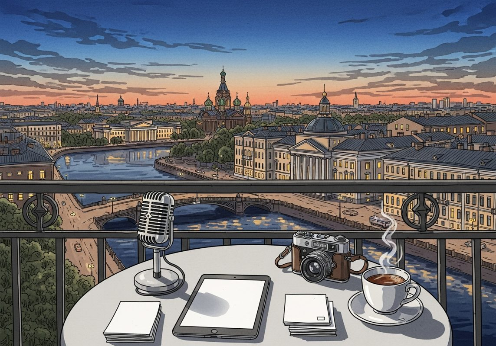

8/3

播客简报 2026-08-03
今日更新
Micky Malka, Founder of Ribbit Capital
来源：David-Senra
原链接：https://www.davidsenra.com/episode/micky-malka
状态：已读完整音频 transcript
这期播客深入探讨了Ribbit Capital创始人Micky Malka的独特思维模式，包括他拒绝标签、拥抱长期主义的“无限游戏”哲学，以及对金融科技、人工智能和新一代创业者的深刻洞察。对于寻求创新思维、理解未来商业趋势，尤其是金融科技领域创业者和投资者来说，本期内容极具启发性。
- 拒绝标签，拥抱流动性：Micky Malka的自我定义：Micky Malka从小在委内瑞拉长大，养成了拒绝被贴标签的习惯。他认为标签会限制人的视野，让人无法看到事物的本质。他将自己定义为“内心是创业者，设计上是投资者”，这种灵活的自我描述让他能够自由切换角色，不断学习和成长。他强调，真正的成长在于不被既有模式束缚，敢于成为非墨守成规者，因为世界总有变得更好的可能。他唯一渴望的标签是“好朋友、好伙伴、好父亲”，这体现了他对个人品格的重视远超职业身份。
- 写作的力量：构建信念与长期愿景：Malka认为写作是构建深刻思想和坚定信念的关键。他与团队撰写长篇论文，这些文章通常从20页的草稿压缩到能在餐巾纸上清晰阐述的程度，这证明了对概念的彻底理解。写作不仅帮助他们理清思路，更重要的是，它让他们能够超越当下，思考未来10到15年的世界格局，从而形成独特的、不受市场短期波动影响的投资信念。这种将想法付诸文字并分享出去，接受反馈的过程，是确保“指南针指向正确方向”的重要方式，也是玩好“无限游戏”的基础。
- 巴菲特的影响：洞察决策模式的永恒价值：Malka在13岁时就购买了伯克希尔哈撒韦的股票，并每年阅读巴菲特的年度信件。他从巴菲特身上学到的最重要一点，并非具体的投资决策，而是巴菲特在任何经济环境下，都能重复运用相同的决策模式和原则。这种“模式识别”能力，即剥离噪音，专注于少数关键因素的纪律性思维，是Malka认为巴菲特之所以伟大的原因。他通过阅读和亲身接触，理解了这些原则如何被应用于不断变化的经济条件中，这对他自身的投资哲学产生了深远影响。
- “代币工厂”与金融AI的未来：Malka提出了“代币工厂”的概念，将“代币”（token）定义为机器可读的信息。他认为，在当前的“代币革命”时代，每个公司都需要信息、资金和知识的供应，并将其转化为新的产品或服务。目前，OpenAI等前沿实验室是主要的“代币工厂”，提供原始信息材料。他预测，未来AI将更深入地融入金融领域，尽管目前“金钱”在AI应用上落后于“知识”。他认为，区块链与AI的结合将催生智能合约和AI代理，这些代理将能自主管理个人财务、投资和支付，极大地解放人们的时间和精力。Stripe、Robinhood和Nubank等创始人主导的公司，正成为这一变革的先行者。
- 无限游戏：超越胜负，拥抱落后：Malka信奉“无限游戏”哲学，即不追求输赢，只关注自己在游戏中是“领先”还是“落后”。他认为，真正的乐趣在于持续参与游戏，不断学习和适应。他甚至反常地表示，自己更喜欢“落后”的状态，因为落后意味着有更大的学习和创新的空间。当领先时，他反而会警惕并寻求改变规则，以重新回到需要创新的位置。这种思维与戴森创始人詹姆斯·戴森的观点不谋而合，即“失败更有趣”，因为它能带来更多的学习和进步。
历史精选
Amazon Web Services
来源：Acquired
原链接：https://www.acquired.fm/episodes/amazon-web-services
状态：已读网页 transcript
这期播客深入剖析了亚马逊网络服务（AWS）从内部工具到全球云计算巨头的非凡历程，揭示了其作为亚马逊真正利润引擎的秘密，适合所有对科技公司战略、商业模式创新和云计算历史感兴趣的听众。
- 利润引擎的诞生：零售巨头背后的秘密武器：亚马逊公司以其庞大的零售业务闻名，但其利润构成却出人意料。播客开篇便指出，亚马逊零售业务的利润率仅为约1.5%，而其云计算部门AWS的利润率高达30%。更令人震惊的是，尽管AWS的收入规模仅为亚马逊零售业务的约15%，但自2015年亚马逊开始单独披露AWS财务数据以来，其运营利润总额每年都与甚至超过了零售业务。这期节目将深入探讨AWS如何从一个内部项目成长为如此重要的利润中心，它不仅是亚马逊的生命线，更是现代互联网运行的基石，其重要性甚至超越了亚马逊的电商平台本身。
- 破除迷思：AWS并非“多余产能”的产物：关于AWS起源最流行的说法是“多余产能”论：亚马逊为了应对假日购物季（Q4）的流量高峰，不得不构建大量服务器，导致Q1-Q3存在大量闲置资源，于是决定将其出租。然而，播客明确驳斥了这一观点。首先，在云基础设施出现之前，公司内部的服务器与应用程序紧密耦合，无法简单出租。其次，如果AWS只是出租闲置产能，那么在亚马逊零售业务最繁忙的Q4，AWS客户的服务质量将无法保证。亚马逊前CTO Werner Vogels也曾公开表示，这完全是个神话，AWS从一开始就被视为一个独立的业务，并期望其能与亚马逊零售业务一样庞大。AWS的诞生，是亚马逊对技术进行战略性投资的产物，而非偶然的成本中心利用。
- Web 2.0的启示：API驱动的早期探索：AWS的真正起源之一，可追溯到Web 2.0时代的理念。2002年初，Web 2.0的倡导者Tim O'Reilly拜访了Jeff Bezos，力劝亚马逊拥抱“参与性文化”和“互操作性”，通过API（应用程序编程接口）让外部开发者与亚马逊网站互动。Bezos深受启发，认为这能极大扩展亚马逊的业务边界，特别是其庞大的Amazon Associates（联盟营销）计划。同年，亚马逊成立了一个新团队，专门构建API，允许开发者访问亚马逊的产品目录，并将其命名为“Amazon Web Services”。虽然此时的AWS主要提供软件API服务，而非云计算基础设施，但它在Bezos心中播下了通过标准化接口对外提供服务的种子，并由Collin Brier担任首任负责人。
- 内部困境与贝佐斯的“硬核接口”指令：进入21世纪初，亚马逊面临着巨大的内部技术挑战。其核心电商平台建立在1995年设计的单一、庞大的“单体代码库”之上，随着公司规模和功能的爆炸式增长，代码库变得极其复杂和脆弱。新功能的开发和部署变得异常缓慢，甚至在假日购物季前必须“代码冻结”，以防系统崩溃。为了解决这一问题，Jeff Bezos（及其当时的“技术助理”Andy Jassy）在2002-2003年间发布了一项激进的内部指令：所有团队必须通过“硬核接口”（即API）暴露其数据和功能，团队之间只能通过这些接口通信，禁止任何直接访问或共享内存，并且所有接口都必须设计成可外部化的。任何不遵守的团队都将被解雇。这项指令推动了亚马逊向“服务导向架构”（SOA）转型，将庞大的系统拆解成相互独立的微服务，极大地提升了内部开发效率和可扩展性。
- 安迪·贾西的愿景与AWS的正式起航：在Bezos的“硬核接口”指令推动下，Andy Jassy作为Bezos的“影子”（技术助理），深入参与了解决内部技术困境的过程。他意识到，亚马逊内部为解决自身问题而构建的标准化、API化的IT基础设施，可能对外部开发者也具有巨大价值。2003年中，Jassy撰写了一份著名的“六页纸”提案，详细阐述了将亚马逊内部IT能力作为服务对外提供的愿景，并请求组建一个57人的团队来启动这项业务。这份提案获得了Bezos和S-Team（高管团队）的批准，Jassy随后接管了AWS部门。他的愿景是提供一套完整的“互联网操作系统”所需的基础服务，包括存储、计算、数据库和内容分发网络（CDN），以赋能全球开发者。Adam Selipsky（现任AWS CEO）和Jeff Lawson（Twilio CEO）等早期核心成员也在此阶段加入。
Kering: It’s Gucci - [Business Breakdowns, EP.199]
来源：Business Breakdowns
原链接：https://joincolossus.com/episode/kering-its-gucci/
状态：已读网页 transcript
这期播客深入剖析了奢侈品巨头开云集团（Kering），特别是其核心品牌Gucci的商业模式、周期性挑战及其与竞争对手LVMH的差异，适合对奢侈品行业、品牌管理及投资策略感兴趣的听众。
- 开云集团概览与核心挑战：这期播客深入剖析了全球奢侈品巨头开云集团（Kering），旗下拥有Gucci、YSL、Bottega Veneta、Balenciaga等一系列知名品牌。然而，与过去五年股价上涨超40%的竞争对手LVMH形成鲜明对比的是，开云集团同期股价却下跌逾60%。这种差异的核心在于开云集团对旗舰品牌Gucci的高度依赖。播客探讨了Gucci独特的品牌定位，使其相比其他“低调奢华”品牌更具周期性，其风格变化往往更受潮流影响，从而导致业绩波动较大，这成为开云当前面临的主要挑战。
- 家族传承与奢侈品集团模式：开云集团由法国皮诺家族（Pinault family）拥有并运营，其家族背景和长期愿景深刻影响着公司的战略决策。在奢侈品集团的模式上，开云与LVMH存在显著差异。LVMH以其庞大且高度多元化的品牌组合著称，涵盖了从时装、皮具到珠宝、葡萄酒等多个品类，这种广阔的布局使其能有效分散风险。而开云集团的品牌组合相对集中于时尚和皮具领域，尤其是Gucci的营收贡献巨大，使得集团整体业绩更容易受到单一品牌表现的影响。
- 创意总监与品牌生命周期：在奢侈品行业，创意总监是品牌的灵魂人物，他们的设计理念和方向直接决定了品牌的市场吸引力和生命周期。播客强调了创意总监在Gucci品牌发展中的关键作用，例如Alessandro Michele时期的繁盛与随后的挑战。Gucci的风格往往大胆、前卫，紧随潮流，这使其在特定时期能迅速引爆市场，但也意味着一旦潮流转向或消费者审美疲劳，品牌就可能面临业绩下滑的风险，从而呈现出明显的周期性波动。
- 分销策略与利润控制：奢侈品集团的盈利能力与分销策略息息相关。近年来，行业普遍趋势是从传统的批发（Wholesale）模式转向更注重直营零售（Retail）。直营模式让品牌能够更直接地控制产品定价、客户体验、库存管理和品牌形象，从而显著提升毛利率。开云集团也积极投资于全球范围内的战略性门店选址和零售网络建设，通过优化门店布局和提升服务质量，以期增强品牌掌控力，提高盈利水平，并更好地应对市场变化。
- 品牌风险与地理偏好：奢侈品品牌并非一劳永逸，其声誉和市场表现可能面临各种风险。例如，Balenciaga曾因不当广告而引发严重的公关危机，导致品牌形象受损和销售下滑，这凸显了品牌管理和危机公关的重要性。此外，不同品牌在不同地理区域的受欢迎程度和文化接受度也存在显著差异。理解并适应这些区域性偏好，对于奢侈品集团制定精准的全球市场策略、避免文化冲突和实现持续增长至关重要。